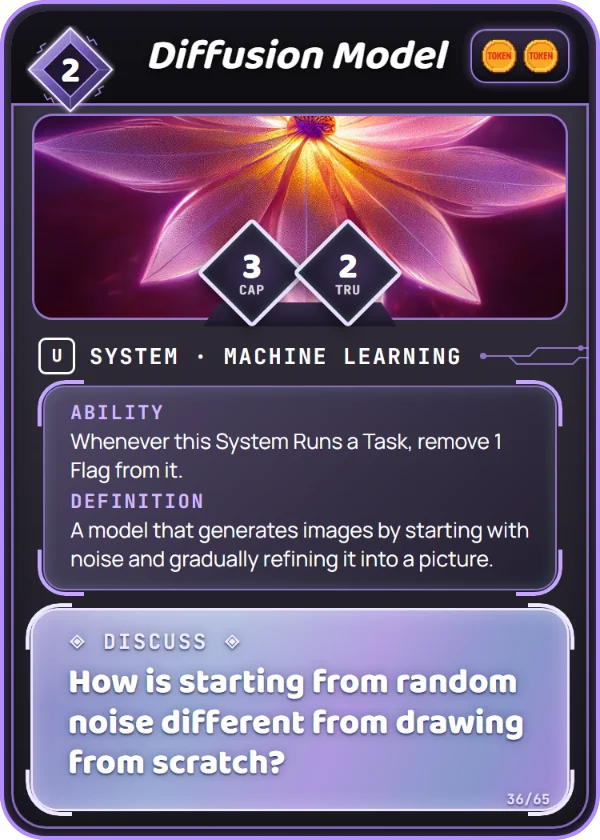
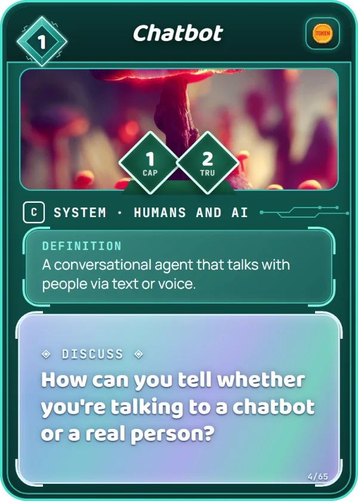
Scores points and fights. Only Systems have stats.
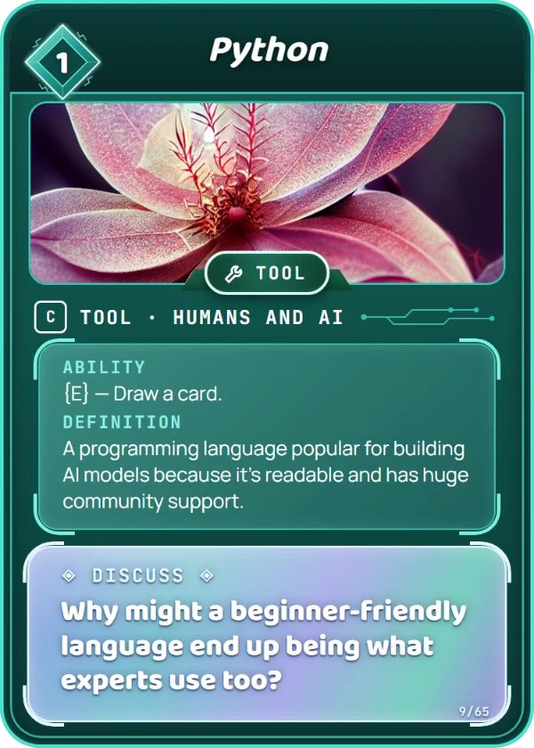
Stays out. Use it again each turn.
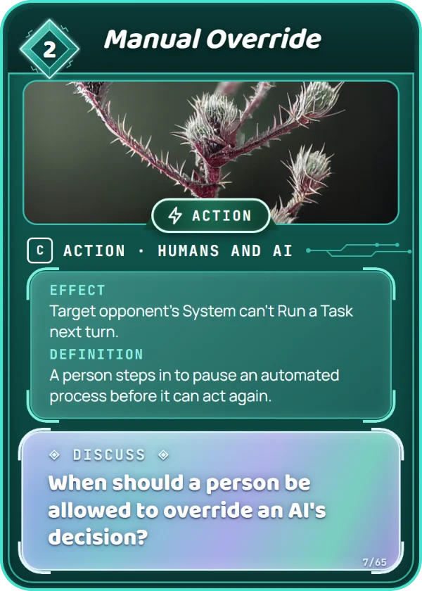
Happens once, then it's discarded.
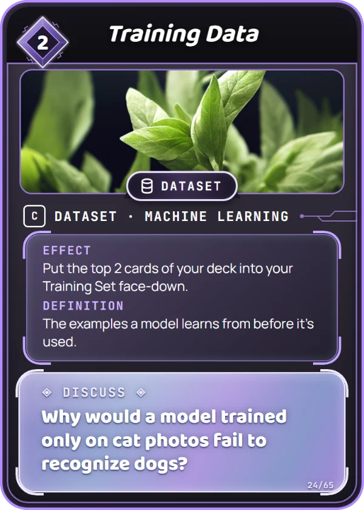
Pay Data, or exert a big System instead.
1 or 2 colors. Max 2 of any card.
First player 5, second player 6. One free redraw.
A die or paper. Everyone starts at zero.
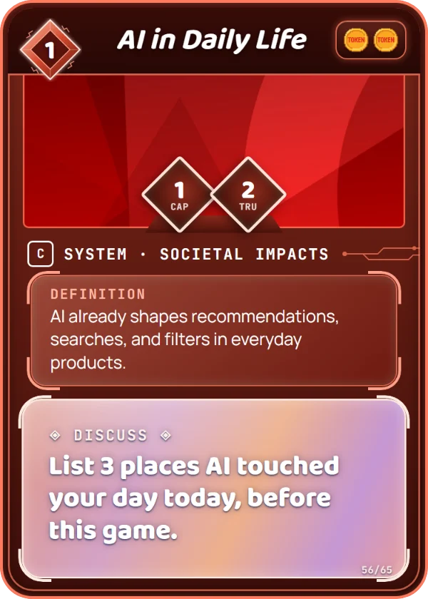
Score the pips in the corner, every turn.
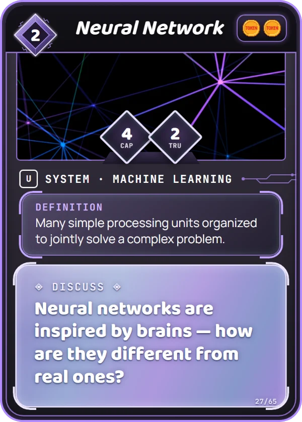
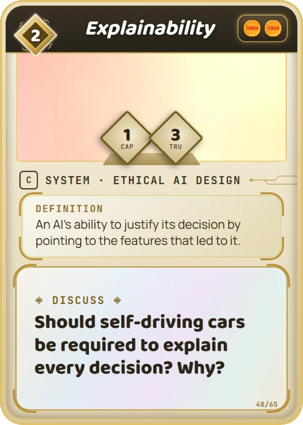
Both sides hit at the same time. Flags equal to Trust = the card is knocked out.
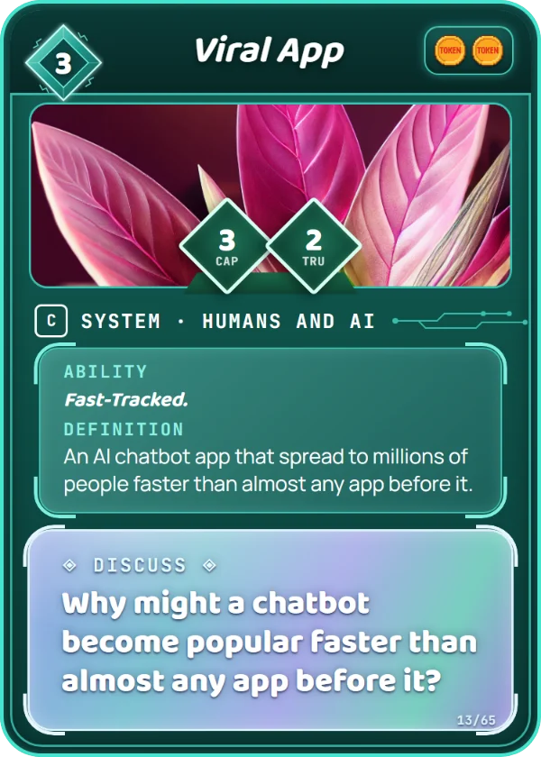
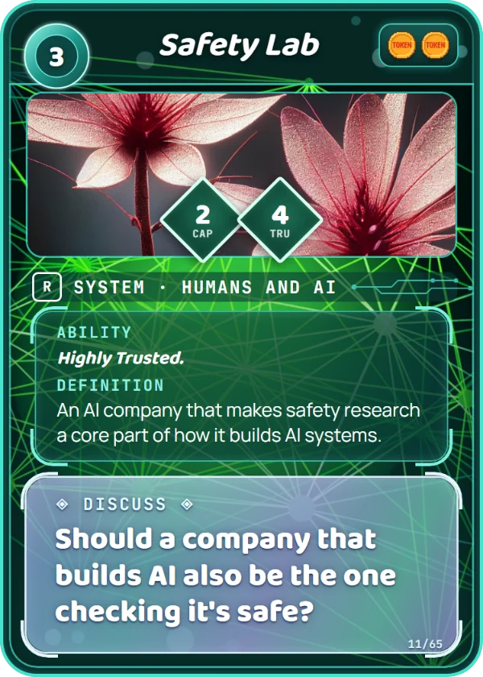
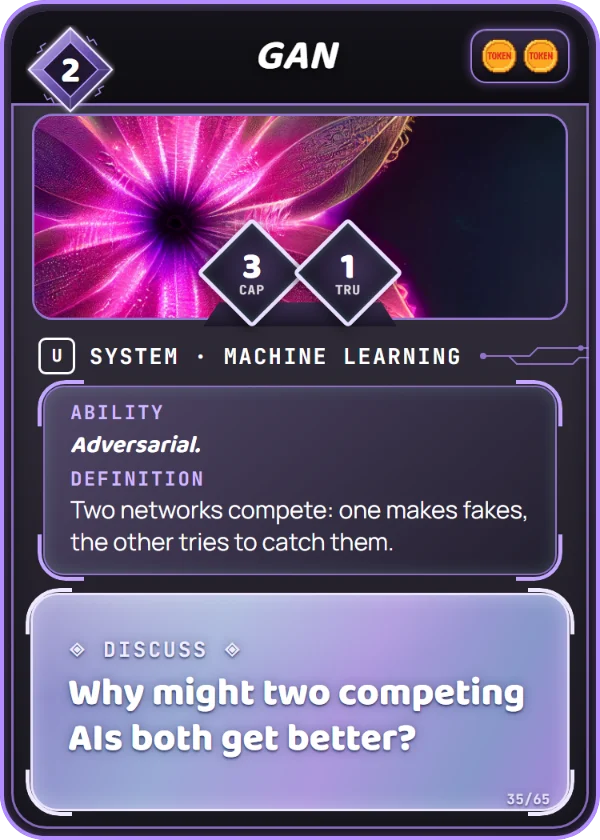
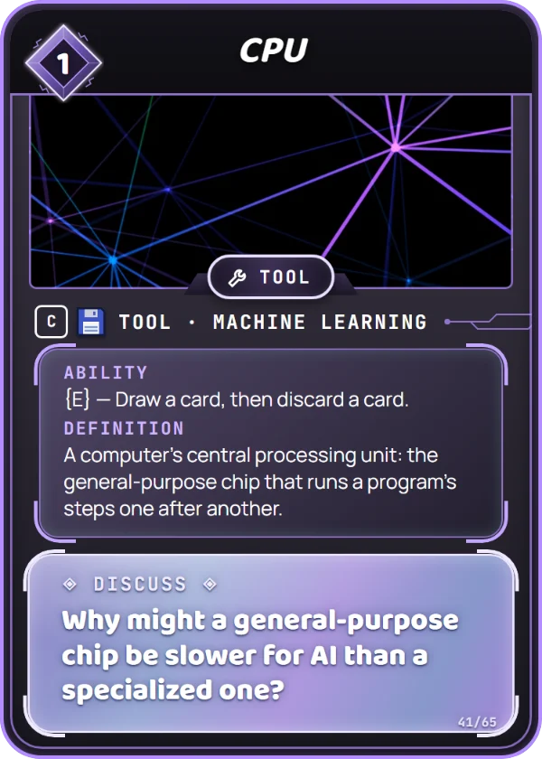
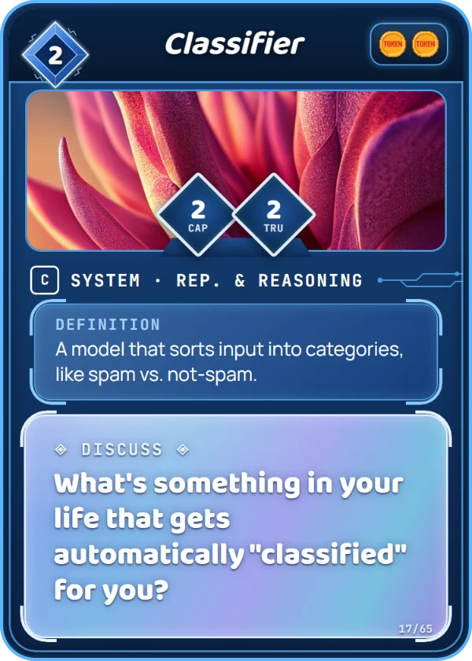
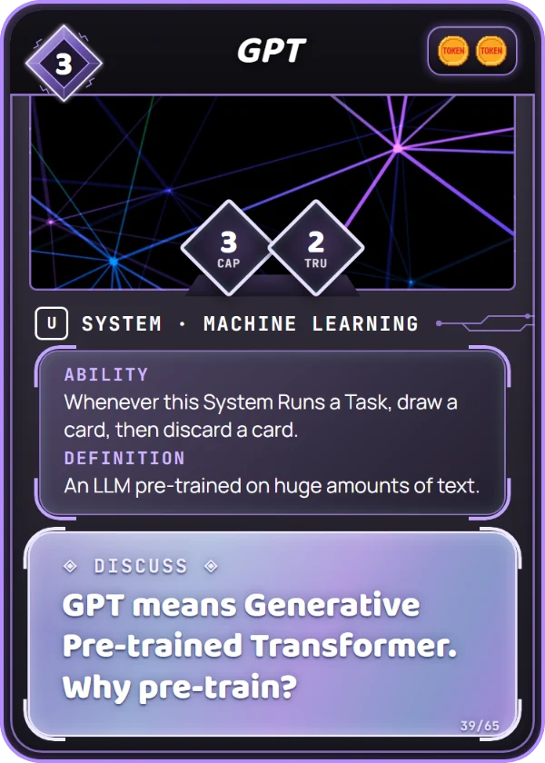
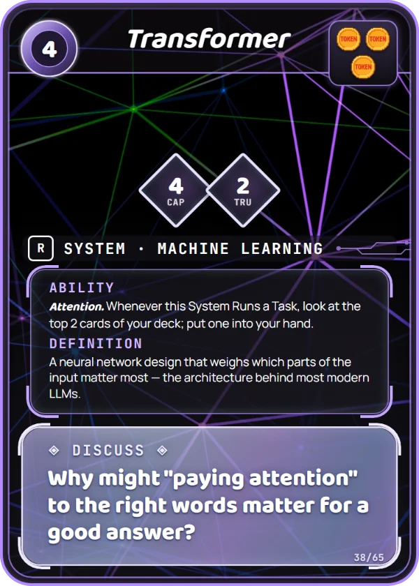
More Systems out = each new one costs more. Lose one and the price drops back.